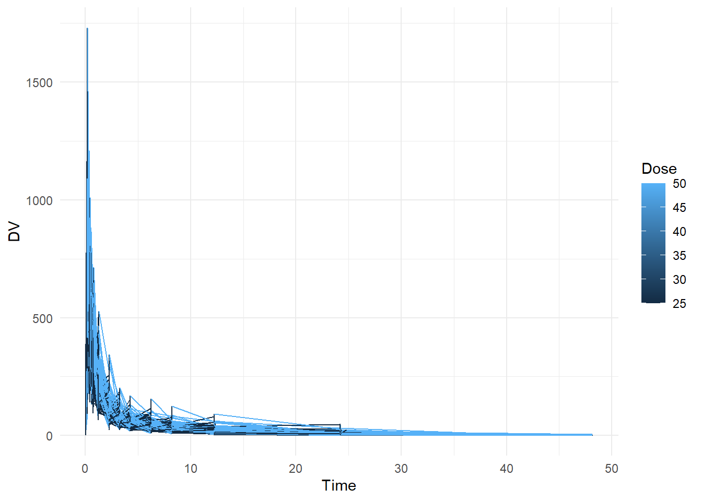
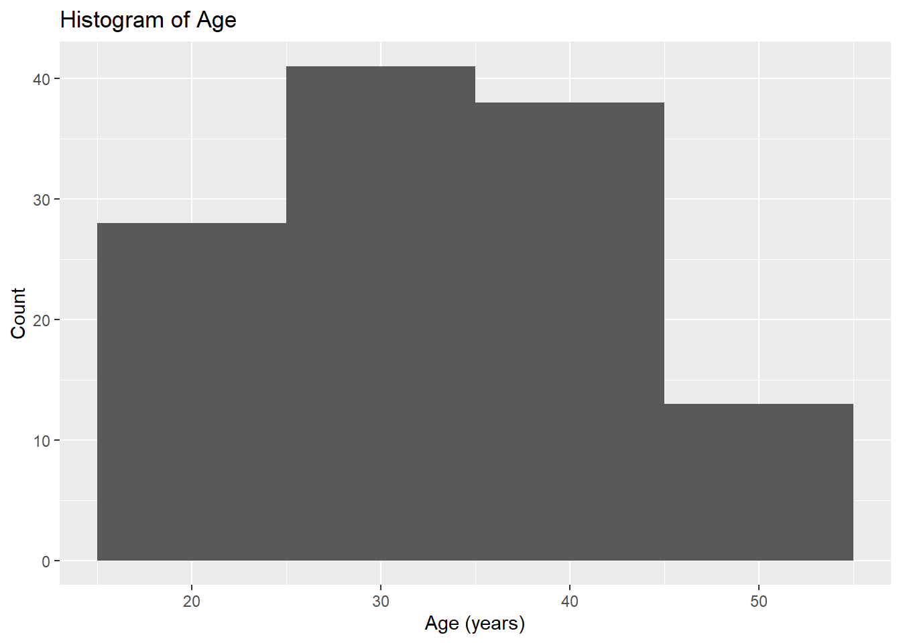
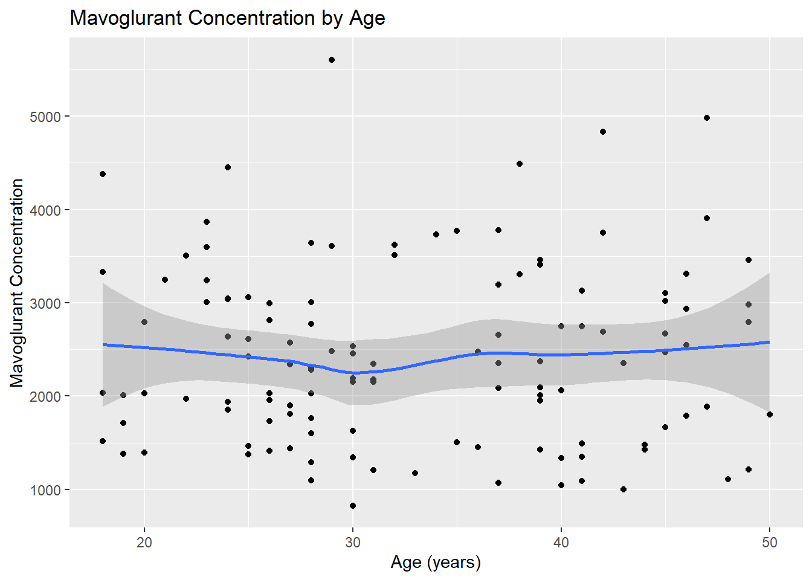
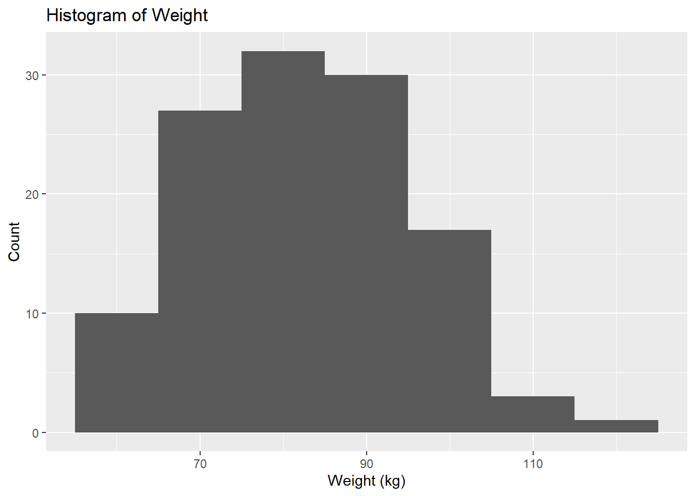
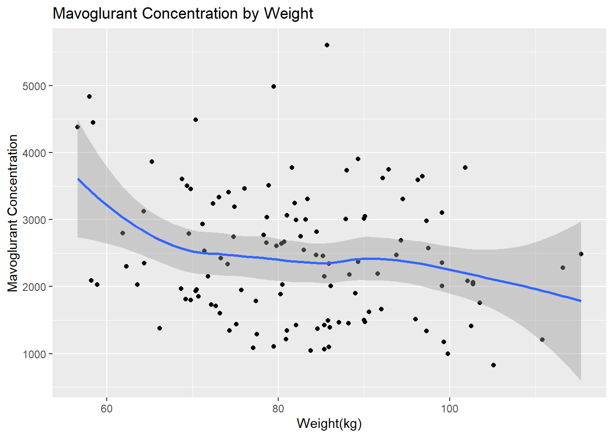
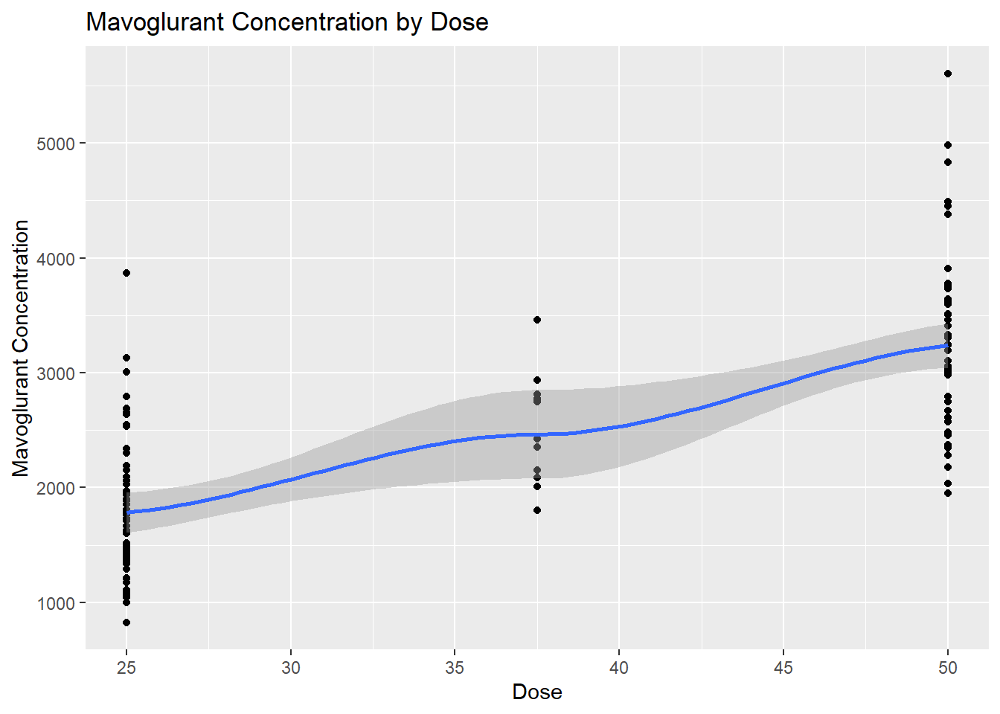
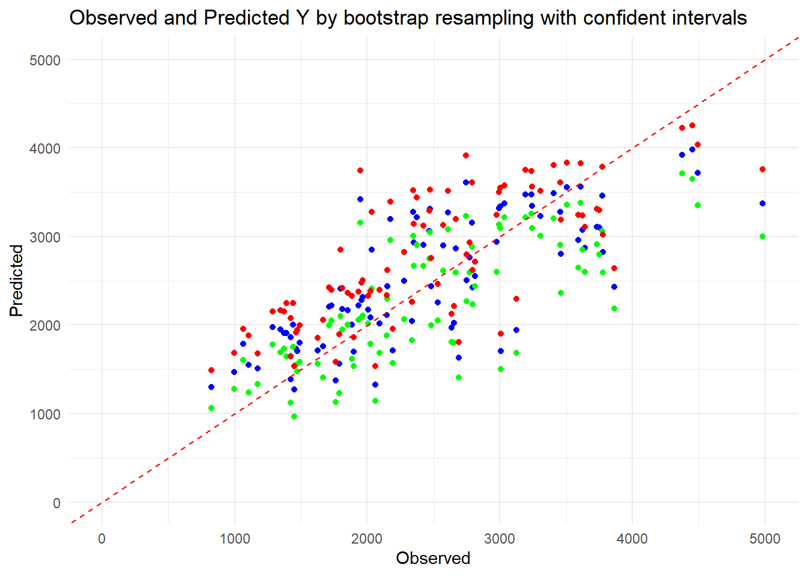

We will be using the dataset found here and made by the nlmixr team for this exercise. The dataset contains pharmacokinetic observations from 120 subjects who were administered IV infusions of mavoglurant. We’ll begin by loading the necessary packages and the dataset.
# Load necessary librarieslibrary(ggplot2)
Warning: package 'ggplot2' was built under R version 4.3.3
library(readr)
Warning: package 'readr' was built under R version 4.3.2
library(here)
Warning: package 'here' was built under R version 4.3.2
here() starts at D:/MADA/kevinkosewick-MADA-portfolio
# Load the datafittingdata <-read.csv(here("fitting-exercise","fittingdata.csv"))# Check the datasummary(fittingdata)
ID CMT EVID EVI2
Min. :793.0 Min. :1.000 Min. :0.00000 Min. :0.0000
1st Qu.:832.0 1st Qu.:2.000 1st Qu.:0.00000 1st Qu.:0.0000
Median :860.0 Median :2.000 Median :0.00000 Median :0.0000
Mean :858.8 Mean :1.926 Mean :0.07394 Mean :0.1613
3rd Qu.:888.0 3rd Qu.:2.000 3rd Qu.:0.00000 3rd Qu.:0.0000
Max. :915.0 Max. :2.000 Max. :1.00000 Max. :4.0000
MDV DV LNDV AMT
Min. :0.00000 Min. : 0.00 Min. :0.000 Min. : 0.000
1st Qu.:0.00000 1st Qu.: 23.52 1st Qu.:3.158 1st Qu.: 0.000
Median :0.00000 Median : 74.20 Median :4.306 Median : 0.000
Mean :0.09373 Mean : 179.93 Mean :4.085 Mean : 2.763
3rd Qu.:0.00000 3rd Qu.: 283.00 3rd Qu.:5.645 3rd Qu.: 0.000
Max. :1.00000 Max. :1730.00 Max. :7.456 Max. :50.000
TIME DOSE OCC RATE
Min. : 0.000 Min. :25.00 Min. :1.000 Min. : 0.00
1st Qu.: 0.583 1st Qu.:25.00 1st Qu.:1.000 1st Qu.: 0.00
Median : 2.250 Median :37.50 Median :1.000 Median : 0.00
Mean : 5.851 Mean :37.37 Mean :1.378 Mean : 16.55
3rd Qu.: 6.363 3rd Qu.:50.00 3rd Qu.:2.000 3rd Qu.: 0.00
Max. :48.217 Max. :50.00 Max. :2.000 Max. :300.00
AGE SEX RACE WT
Min. :18.0 Min. :1.000 Min. : 1.000 Min. : 56.60
1st Qu.:26.0 1st Qu.:1.000 1st Qu.: 1.000 1st Qu.: 73.30
Median :31.0 Median :1.000 Median : 1.000 Median : 82.60
Mean :32.9 Mean :1.128 Mean : 7.415 Mean : 83.16
3rd Qu.:40.0 3rd Qu.:1.000 3rd Qu.: 2.000 3rd Qu.: 90.60
Max. :50.0 Max. :2.000 Max. :88.000 Max. :115.30
HT
Min. :1.520
1st Qu.:1.710
Median :1.780
Mean :1.762
3rd Qu.:1.820
Max. :1.930
# Create plot that shows a line for each individual, with DV on the y-axis and time on the x-axis. Stratify by dose ggplot(fittingdata, aes(x = TIME, y = DV, color = DOSE, group = ID)) +geom_line() +labs(x ="Time", y ="DV", color ="Dose") +theme_minimal()

We can see that the data records a time series measuring concentrations of DV (which stands for Dependent Variable, which is Mavoglurant). Looking at the summary, we can see that OCC has values greater than 1. We don’t know what these mean so we probably shouldn’t use them. We’ll remove all observations with values other than 1.
# Load necessary librarylibrary(dplyr)
Attaching package: 'dplyr'
The following objects are masked from 'package:stats':
filter, lag
The following objects are masked from 'package:base':
intersect, setdiff, setequal, union
# Filter the datafittingdata2 <- fittingdata %>%filter(OCC ==1)
We now want to compute the sum of DV for each individual to determine the full amount of drug for each individual. I understand that according to the exercise details this is not the best approach, but this is mainly for practice anyways. I consulted Microsoft Copilot for help with this using this prompt (which is also the same as the instructions laid out in the exercise explanation): “Write code to exclude the observations with TIME = 0, then compute the sum of the DV variable for each individual using dplyr::summarize(). Call this variable Y. The result from this step should be a data frame/tibble of size 120 x 2, one column for the ID one for the variable Y. Next, create a data frame that contains only the observations where TIME == 0. This should be a tibble of size 120 x 17. Finally, use the appropriate join function to combine those two data frames, to get a data frame of size 120 x 18.”
# Exclude observations with TIME = 0 and compute the sum of DV for each individualfittingdata_sum <- fittingdata2 %>%filter(TIME !=0) %>%group_by(ID) %>%summarize(Y =sum(DV))# Create a data frame that contains only the observations where TIME == 0fittingdata_time0 <- fittingdata2 %>%filter(TIME ==0)# Use the appropriate join function to combine those two data framesfittingdata_combined <-left_join(fittingdata_time0, fittingdata_sum, by ="ID")
We’ve created a new data frame that contains columns that are much easier to analyze now. We’ll do some final cleaning steps by converting RACE and SEX to factors and removing some columns that we no longer need.
# Convert RACE and SEX to factor variables and keep only variables specified in the exercise instructionsfittingdata_final <- fittingdata_combined %>%mutate(RACE =as.factor(RACE),SEX =as.factor(SEX)) %>%select(Y, DOSE, AGE, SEX, RACE, WT, HT)#save the cleaned datasaveRDS(fittingdata_final, file ="modelfitting.rds")# Check data to make sure everything is goodsummary(fittingdata_final)
Y DOSE AGE SEX RACE
Min. : 826.4 Min. :25.00 Min. :18.00 1:104 1 :74
1st Qu.:1700.5 1st Qu.:25.00 1st Qu.:26.00 2: 16 2 :36
Median :2349.1 Median :37.50 Median :31.00 7 : 2
Mean :2445.4 Mean :36.46 Mean :33.00 88: 8
3rd Qu.:3050.2 3rd Qu.:50.00 3rd Qu.:40.25
Max. :5606.6 Max. :50.00 Max. :50.00
WT HT
Min. : 56.60 Min. :1.520
1st Qu.: 73.17 1st Qu.:1.700
Median : 82.10 Median :1.770
Mean : 82.55 Mean :1.759
3rd Qu.: 90.10 3rd Qu.:1.813
Max. :115.30 Max. :1.930
class(fittingdata_final$RACE)
[1] "factor"
We’ll begin a formal EDA now. We’re interested in how each of the variables influences our outcome variable that we created, “Y”. Again, this is the sum per individual of all of our original “DV” values. Before we begin, we should note that the documentation for this dataset is not very good. We don’t know what the values in RACE or SEX indicate, so interpreting results from the EDA will be challenging for these. According to the study this is based off of, 86% of participants were male, so we can assume that a value of 1 is male and 2 is female (based off of the frequency of these values in the dataset). We’ll generate plots for them regardless. First up is our AGE variable.
# Load required packagelibrary(ggplot2)# Histogram for Ageggplot(fittingdata_final, aes(x = AGE)) +geom_histogram(binwidth =10) +labs(title ="Histogram of Age", x ="Age (years)", y ="Count")

# Scatterplot for Y by Ageggplot(fittingdata_final, aes(x = AGE, y = Y)) +geom_point() +geom_smooth(method ="loess") +labs(title ="Mavoglurant Concentration by Age", x ="Age (years)", y ="Mavoglurant Concentration")
`geom_smooth()` using formula = 'y ~ x'

Our age values seem to have a relatively normal distribution with a minimum of 18 and maximum of 50. Our scatterplot shows that mavoglurant concentrations seem to remain the same on average between individuals of different ages. The plot shows no clear correlation one way or the other. Next, we’ll investigate SEX.
# Boxplot for mavoglurant concentration by sexggplot(fittingdata_final, aes(x = SEX, y = Y)) +geom_boxplot() +labs(title ="Concentration by Sex", x ="Sex", y ="Mavoglurant Concentration")
If we knew what our dataset’s values meant or had clear documentation somewhere, we could interpret these results with certainty. Instead, all we can say is that if I’m right about 1 being male, they had higher concentrations on average than females. Given greatly unequal sample sizes and unclear documentation, we can’t draw many conclusions from this.
# Bar plot for Raceggplot(fittingdata_final, aes(x = RACE)) +geom_bar() +labs(title ="Bar Plot of Race", x ="Race", y ="Count")
# Boxplot for mavoglurant concentration by raceggplot(fittingdata_final, aes(x = RACE, y = Y)) +geom_boxplot() +labs(title ="Concentration by Race", x ="Race", y ="Mavoglurant Concentration")
We have no idea what this means since we don’t have good documentation on the variables. Next, we’ll look at our WT variable, which stands for weight (kg).
# Histogram for Weightggplot(fittingdata_final, aes(x = WT)) +geom_histogram(binwidth =10) +labs(title ="Histogram of Weight", x ="Weight (kg)", y ="Count")

# Scatterplot for Y by Weightggplot(fittingdata_final, aes(x = WT, y = Y)) +geom_point() +geom_smooth(method ="loess") +labs(title ="Mavoglurant Concentration by Weight", x ="Weight(kg)", y ="Mavoglurant Concentration")
`geom_smooth()` using formula = 'y ~ x'

We can see that there are more observations of low-mid weight than high weight individuals from our histogram. We can see from our scatterplot that there isn’t a strong correlation between weight and concentration, but it seems like higher weights have lower concentrations on average. Now we can explore HT, which is apparently our height variable. No units were given, so this will be difficult to interpret at best.
# Histogram for Heightggplot(fittingdata_final, aes(x = HT)) +geom_histogram(binwidth =0.1) +labs(title ="Histogram of Height", x ="Height", y ="Count")
# Scatterplot for Y by Heightggplot(fittingdata_final, aes(x = HT, y = Y)) +geom_point() +geom_smooth(method ="loess") +labs(title ="Mavoglurant Concentration by Height", x ="Height", y ="Mavoglurant Concentration")
`geom_smooth()` using formula = 'y ~ x'
We can’t tell much from the histogram since we don’t know what unit height is in, but the data seems relatively normally distributed. It is slightly skewed to the right, but not by much. The scatterplot doesn’t show a strong or clear correlation, but on average, it looks like concentration decreased as height increased. Finally, we’ll look at our dose variable, which only has values of 25, 37.5, and 50.
# Bar plot for Doseggplot(fittingdata_final, aes(x = DOSE)) +geom_bar() +labs(title ="Bar Plot of Race", x ="Dose", y ="Count")
# Scatterplot for Y by Doseggplot(fittingdata_final, aes(x = DOSE, y = Y)) +geom_point() +geom_smooth(method ="loess") +labs(title ="Mavoglurant Concentration by Dose", x ="Dose", y ="Mavoglurant Concentration")
`geom_smooth()` using formula = 'y ~ x'
Warning in simpleLoess(y, x, w, span, degree = degree, parametric = parametric,
: pseudoinverse used at 24.875
Warning in simpleLoess(y, x, w, span, degree = degree, parametric = parametric,
: reciprocal condition number 2.903e-16
Warning in simpleLoess(y, x, w, span, degree = degree, parametric = parametric,
: There are other near singularities as well. 631.27
Warning in predLoess(object$y, object$x, newx = if (is.null(newdata)) object$x
else if (is.data.frame(newdata))
as.matrix(model.frame(delete.response(terms(object)), : pseudoinverse used at
24.875
Warning in predLoess(object$y, object$x, newx = if (is.null(newdata)) object$x
else if (is.data.frame(newdata))
as.matrix(model.frame(delete.response(terms(object)), : neighborhood radius
25.125
Warning in predLoess(object$y, object$x, newx = if (is.null(newdata)) object$x
else if (is.data.frame(newdata))
as.matrix(model.frame(delete.response(terms(object)), : reciprocal condition
number 2.903e-16
Warning in predLoess(object$y, object$x, newx = if (is.null(newdata)) object$x
else if (is.data.frame(newdata))
as.matrix(model.frame(delete.response(terms(object)), : There are other near
singularities as well. 631.27

We see that there were far fewer 37.5 doses than the others, but according to the scatterplot, there’s a clear trend of increased concentration as the dosage increases. This concludes our EDA; now, we can move into our model fitting.
We will now fit a linear model to Y using the main predictor of interest, DOSE. Then, we’ll fit a linear model to Y using all predictors and compare their RMSE and R-squared values. We’ll be using Microsoft Copilot in Precise mode for help with the base code again.
# Load necessary librarieslibrary(tidymodels)
Warning: package 'tidymodels' was built under R version 4.3.2
# Split the data into training and testing setsfittingdata_split <-initial_split(fittingdata_final, prop =0.75)train_data <-training(fittingdata_split)test_data <-testing(fittingdata_split)# Fit a linear model to the continuous outcome "Y" using the main predictor of interest, DOSEmodel1_spec <-linear_reg() %>%set_engine("lm") %>%set_mode("regression")model1_fit <- model1_spec %>%fit(Y ~ DOSE, data = train_data)# Fit a linear model to the continuous outcome "Y" using all predictorsmodel2_spec <-linear_reg() %>%set_engine("lm") %>%set_mode("regression")model2_fit <- model2_spec %>%fit(Y ~ ., data = train_data)# Compute RMSE and R-squared for model1model1_metrics <- model1_fit %>%predict(test_data) %>%bind_cols(test_data) %>%metrics(truth = Y, estimate = .pred)cat("Model 1:\n")
parsnip model object
Call:
stats::lm(formula = Y ~ DOSE, data = data)
Coefficients:
(Intercept) DOSE
357.41 56.77
print(model2_fit)
parsnip model object
Call:
stats::lm(formula = Y ~ ., data = data)
Coefficients:
(Intercept) DOSE AGE SEX2 RACE2 RACE7
2709.882 58.520 6.405 -329.950 172.393 -243.400
RACE88 WT HT
168.380 -22.854 -413.602
From our linear model that only uses DOSE as a predictor, we can see that DOSE is positively correlated with total mavoglurate concentration, which matches up with our EDA plot data. We can tell by looking at the coefficients produced by our models; positive coefficients indicate positive correlation whereas negative indicates negative.
Our second model shows that dose is positively correlated again. Furthermore, age and race2/88 are both positively correlated too, but the size of the coefficients indicates that age may be a weaker correlation. Sex 2, our females, are strongly negatively correlated with mavoglurate concentration. Race7 and height seem to be very strongly negatively correlated. Finally, weight is negatively correlated, but due to the coefficient size, this doesn’t seem to be a strong relationship.
Our first model, which only uses DOSE as a predictor, seems to explain a bit more of the variation in the data. The R-squared value is slightly higher (by 0.003). However, the RMSE is also higher, which means that the error of Model 1 is slightly higher than that of model 2.
Now, we’ll look at how to do a logistic regression model on our data. We’ll use SEX as the outcome since it’s a categorical variable, even though this doesn’t make sense from a science standpoint (it’s just practice). We’ll do the same thing: 1 model for just DOSE, and another for every predictor. Then we’ll produce an ROC-AUC, which just measures performance for the classification problems at various threshold settings. We’ll use Microsoft Copilot in Precise mode for the base code again.
# Fit a logistic model to the categorical/binary outcome (SEX) using the main predictor of interest, DOSEmodel3_spec <-logistic_reg() %>%set_engine("glm") %>%set_mode("classification")model3_fit <- model3_spec %>%fit(SEX ~ DOSE, data = train_data)# Fit a logistic model to SEX using all predictorsmodel4_spec <-logistic_reg() %>%set_engine("glm") %>%set_mode("classification")model4_fit <- model4_spec %>%fit(SEX ~ ., data = train_data)# Compute ROC-AUC for "female" class for model3model3_roc_auc_female <- model3_fit %>%predict(test_data, type ="prob") %>%bind_cols(test_data) %>%roc_auc(truth = SEX, .pred_2)# Compute ROC-AUC for "male" class for model3model3_roc_auc_male <- model3_fit %>%predict(test_data, type ="prob") %>%bind_cols(test_data) %>%roc_auc(truth = SEX, .pred_1)cat("Model 3:\n")
Model 3:
cat("ROC-AUC for '2': ", model3_roc_auc_female$.estimate, "\n")
ROC-AUC for '2': 0.6105769
cat("ROC-AUC for '1': ", model3_roc_auc_male$.estimate, "\n\n")
ROC-AUC for '1': 0.3894231
# Compute ROC-AUC for "female" class for model4model4_roc_auc_female <- model4_fit %>%predict(test_data, type ="prob") %>%bind_cols(test_data) %>%roc_auc(truth = SEX, .pred_2)# Compute ROC-AUC for "male" class for model4model4_roc_auc_male <- model4_fit %>%predict(test_data, type ="prob") %>%bind_cols(test_data) %>%roc_auc(truth = SEX, .pred_1)cat("Model 4:\n")
Model 4:
cat("ROC-AUC for '2': ", model4_roc_auc_female$.estimate, "\n")
ROC-AUC for '2': 0.25
cat("ROC-AUC for '1': ", model4_roc_auc_male$.estimate, "\n")
ROC-AUC for '1': 0.75
print(model3_fit)
parsnip model object
Call: stats::glm(formula = SEX ~ DOSE, family = stats::binomial, data = data)
Coefficients:
(Intercept) DOSE
0.02293 -0.05652
Degrees of Freedom: 89 Total (i.e. Null); 88 Residual
Null Deviance: 70.68
Residual Deviance: 66.75 AIC: 70.75
print(model4_fit)
parsnip model object
Call: stats::glm(formula = SEX ~ ., family = stats::binomial, data = data)
Coefficients:
(Intercept) Y DOSE AGE RACE2 RACE7
5.149e+01 -8.105e-04 -3.547e-02 7.987e-02 -1.666e+00 -1.383e+01
RACE88 WT HT
-1.712e+00 -7.829e-02 -2.720e+01
Degrees of Freedom: 89 Total (i.e. Null); 81 Residual
Null Deviance: 70.68
Residual Deviance: 25.69 AIC: 43.69
The coefficients for both models are very different than they were for our linear regression model that had Y as the outcome. We can see that DOSE appears to be negatively correlated with SEX, which in our case would indicate that higher doses mean more males. DOSE is again negatively correlated in our model using every variable as a predictor. Age, weight, Race88 and Race7 are all positively correlated, which means that as these increase we’re more likely to see females. Y, Race2, and height are negatively correlated.
We can see that the ROC-AUC value for Model 3 (just dose as a predictor) shows similar performance of the model when predicting both male and female values. Remember that “1” is our males and “2” is our females. Model 4, on the other hand, shows a far stronger ability to accurately predict males than females. This makes sense given that we had so many more observations of males in our data.
This set of models isn’t as useful in making any sort of inferences about our data, as the question we asked before creating our model doesn’t make much sense. It’s good practice regardless.
Now, we’ll prep our data for the next exercise. We’ll set a random seed and begin splitting our data into test/train sets to fit some more models.
#The Race variable is weird; we'll remove it and continue with the exercisefittingdata_ultimate <- fittingdata_finalfittingdata_ultimate$RACE <-NULL#set a random seedset.seed(1234)# Put 3/4 of the data into the training set data_split <-initial_split(fittingdata_ultimate, prop =3/4)# Create data frames for the two sets:train_data2 <-training(data_split)test_data2 <-testing(data_split)
Now that we’ve split the dataframe with the RACE variable removed, we can fit two new models. One uses only DOSE as a predictor for Y and one uses all variables. I gave Microsoft Copilot in Precise Mode the following prompt to generate this code and modified it to the specifics of our frame:
“In R, I have a data frame composed of 6 variables. I’ve split the observations with 75% in a training set and 25% in a testing set. Can you write code that uses the tidymodels framework to fit two linear models to our continuous outcome of interest (Y). The first model should only use DOSE as predictor, the second model should use all predictors. For both models, the metric to optimize should be RMSE. You should only use the training data set for fitting.”
# Specify the model using only DOSE as predictormodel_spec_dose <-linear_reg() %>%set_engine("lm") %>%set_mode("regression")# Create a workflowworkflow_dose <-workflow() %>%add_model(model_spec_dose) %>%add_formula(Y ~ DOSE)# Specify the model using all predictorsmodel_spec_all <-linear_reg() %>%set_engine("lm") %>%set_mode("regression")# Create a workflowworkflow_all <-workflow() %>%add_model(model_spec_all) %>%add_formula(Y ~ .)#fit the DOSE modeldose_fit <- workflow_dose %>%fit(data = train_data2)#augment to evaluate performance metricaug_dose<-augment(dose_fit, train_data2)aug_dose %>%select(Y, .pred)
#get RMSE of ALL modelrmseall<- aug_all %>%rmse(truth = Y, .pred)# Print the resultsrmsedose
# A tibble: 1 × 3
.metric .estimator .estimate
<chr> <chr> <dbl>
1 rmse standard 703.
rmseall
# A tibble: 1 × 3
.metric .estimator .estimate
<chr> <chr> <dbl>
1 rmse standard 627.
Our second model using every predictor has a lower RMSE. We’ll now compute the RMSE of a null-model (one that would just predict the mean outcome for each observation, without using any predictor information).
# Compute the mean outcomemean_outcome <-mean(train_data2$Y, na.rm =TRUE)# Create a data frame with the predicted values for the null modelpredictions_null <-data.frame(.pred =rep(mean_outcome, nrow(train_data2)))# Compute RMSE for the null modelrmse_null <- predictions_null %>%bind_cols(train_data2 %>%select(Y)) %>% yardstick::rmse(Y, .pred)# Print the RMSE for the null modelprint(paste("RMSE for the null model: ", rmse_null$.estimate))
[1] "RMSE for the null model: 948.352631392634"
As the results show us (RMSE of 627), the best fitting model appears to be the one using all variables as predictors for Y. As to be expected, the null model that doesn’t use any predictors has the highest RMSE, indicating that it’s a poor fit. The model usng only DOSE as a predictor has a far lower RMSE (702 compared to 948) but it is higher than our all predictor model. However, we can’t be sure that this isn’t due to overfitting since we’re only using RMSE as our metric. We’ll use cross-validation (CV) as a way to see if these results could be achieved on unseen data. We’ll follow the tidymodels framework again for this code.
#reset the seedset.seed(1234)# Create 10-fold cross-validation splitscv_splits <-vfold_cv(train_data2, v =10)# Perform cross-validation for the DOSE modelcv_results_dose <- workflow_dose %>%fit_resamples(resamples = cv_splits, metrics =metric_set(rmse))# Perform cross-validation for the all predictors modelcv_results_all <- workflow_all %>%fit_resamples(resamples = cv_splits, metrics =metric_set(rmse))# Print the RMSE for each modelcv_results_dose %>%collect_metrics()
# A tibble: 1 × 6
.metric .estimator mean n std_err .config
<chr> <chr> <dbl> <int> <dbl> <chr>
1 rmse standard 691. 10 67.5 Preprocessor1_Model1
cv_results_all %>%collect_metrics()
# A tibble: 1 × 6
.metric .estimator mean n std_err .config
<chr> <chr> <dbl> <int> <dbl> <chr>
1 rmse standard 646. 10 64.8 Preprocessor1_Model1
# Run the code again with a different seedset.seed(456)# Create 10-fold cross-validation splitscv_splits <-vfold_cv(train_data2, v =10)# Perform cross-validation for the DOSE modelcv_results_dose <- workflow_dose %>%fit_resamples(resamples = cv_splits, metrics =metric_set(rmse))# Perform cross-validation for the all predictors modelcv_results_all <- workflow_all %>%fit_resamples(resamples = cv_splits, metrics =metric_set(rmse))# Print the RMSE for each modelcv_results_dose %>%collect_metrics()
# A tibble: 1 × 6
.metric .estimator mean n std_err .config
<chr> <chr> <dbl> <int> <dbl> <chr>
1 rmse standard 689. 10 66.6 Preprocessor1_Model1
cv_results_all %>%collect_metrics()
# A tibble: 1 × 6
.metric .estimator mean n std_err .config
<chr> <chr> <dbl> <int> <dbl> <chr>
1 rmse standard 630. 10 62.2 Preprocessor1_Model1
We can see that our RMSE value is 690 for our DOSE model and 645 for our all predictors model. The gap between these two is smaller than it was for our previous model evaluation without CV but the all predictors model still appears to fit better. Our second random number seed CV run gives 689 for DOSE and 630 for all predictors; this is very similar to the previous run but our all predictor model gives a slighlty stronger value.
Looking at the standard error values, we can see that the standard error is lower in both RNG seeds for our all predictor models. These models seem more robust and than the DOSE models overall. We didn’t bother to run CV on the null model again because it doesn’t give much more information. Overall, our patterns seem the same as our initial evaluations indicated.
This section added by Xueyan Hu
create a plot
# Create a data frame with observed and predicted values from the three modelspredictions_df <-data.frame(Observed = train_data2$Y, # Observed valuesPredicted_lm1 =predict(dose_fit, new_data = train_data2),Predicted_lm2 =predict(all_fit, new_data = train_data2) ) # Bind the predictions from the null model to the predictions data framepredictions_df <-bind_cols(predictions_df, predictions_null)
New names:
• `.pred` -> `.pred...2`
• `.pred` -> `.pred...4`
# rename the prediction valuespredictions_df <- predictions_df %>%rename("Dose_Model"=".pred...2","All_Model"=".pred.1","Null_Model"=".pred...4")# Create a scatter plot using ggplot2ggplot(predictions_df, aes(x = Observed)) +geom_point(aes(y = Dose_Model, color ="Dose_Model"), shape =1) +geom_point(aes(y = All_Model, color ="All_Model"), shape =2) +geom_point(aes(y = Null_Model, color ="Null_Model"), shape =3) +geom_abline(slope =1, intercept =0, color ="black", linetype ="dashed") +xlim(0, 5000) +ylim(0, 5000) +# Set axes limitslabs(x ="Observed", y ="Predicted") +# Axis labelstheme_minimal() +# Minimal themescale_color_manual(values =c("red", "blue", "green", "black")) +# Color for each modelguides(color =guide_legend(title ="Model")) # Legend title
Warning: Removed 1 row containing missing values or values outside the scale range
(`geom_point()`).
Removed 1 row containing missing values or values outside the scale range
(`geom_point()`).
Removed 1 row containing missing values or values outside the scale range
(`geom_point()`).
Null model predictions only have mean, so it is a horizontal line. Since dose has 3 levels, dose model also form 3 horizontal lines. All predictor model seem more disperse than other 2.
residual plot
# Calculate residuals for Model 2predictions_df$residuals <- predictions_df$All_Model - predictions_df$Observed# Create a scatter plot of residuals versus predicted for Model 2ggplot(predictions_df, aes(x = All_Model, y = residuals)) +geom_point() +geom_hline(yintercept =0, linetype ="dashed", color ="red") +labs(x ="Predicted", y ="Residuals") +theme_minimal()
boobstrap resampling for model 2
# Set seedset.seed(1234)# Create 100 bootstrap samplesboot_samples <-bootstraps(train_data2, times =100)# Function to fit model and make predictionsfit_model <-function(data) { model <-lm(Y ~ ., data = data)return(predict(model, newdata = train_data2))}# Fit model to each bootstrap sample and make predictionspred_bs <-lapply(boot_samples$splits, function(split) { fit_data <-analysis(split)fit_model(fit_data)})# Convert the list of predictions to a matrix or arraypred_array <-do.call(cbind, pred_bs)# Compute median and confidence intervalspreds <- pred_array |>apply(1, quantile, c(0.055, 0.5, 0.945)) |>t()# Plot observed values versus point estimates and confidence intervalsobserved <- train_data2$Ypoint_estimate <- preds[, 2]lower_ci <- preds[, 1]upper_ci <- preds[, 3]# Plotplot_data <-data.frame(Observed = observed,Point_Estimate = point_estimate,Lower_CI = lower_ci,Upper_CI = upper_ci)ggplot(plot_data, aes(x = Observed)) +geom_point(aes(y = Point_Estimate), color ="blue", shape =19) +geom_point(aes(y = Lower_CI), color ="green", shape =19) +geom_point(aes(y = Upper_CI), color ="red", shape =19) +geom_abline(slope =1, intercept =0, linetype ="dashed", color ="red") +xlim(0, 5000) +ylim(0, 5000) +labs(x ="Observed", y ="Predicted",title ="Observed and Predicted Y by bootstrap resampling with confident intervals") +theme_minimal()
Warning: Removed 1 row containing missing values or values outside the scale range
(`geom_point()`).
Removed 1 row containing missing values or values outside the scale range
(`geom_point()`).
Removed 1 row containing missing values or values outside the scale range
(`geom_point()`).

The red line means the predictions perfectly fit the observed outcome. According to the plot, the blue dots(median predicted values) align kind of closely with the dashed red line, which means the model’s predictions are accurate on average. The green and red points (confidence intervals) are kind of narrow and symmetric around the blue points, which indicates high precision and confidence in the model’s predictions. And I don’t think there’s a consistent pattern of points deviating from the dashed red line, so maybe there is no potential issues with the model’s performance or uncertainty in predictions.
#Exercise 10 Part 3
Building off of Xueyan’s contributions, we will do one final model assessment using the test data we’ve saved for this step. I am again using Microsoft Copilot to help generate code.
# Compute predictions for the test data using the all predictors modelpredictions_test <-predict(all_fit, new_data = test_data2)# Create a scatter plot using ggplot2ggplot(predictions_df, aes(x = Observed, y = All_Model)) +geom_point(color ="blue") +geom_point(data =data.frame(Observed = test_data2$Y, All_Model = predictions_test$.pred), aes(x = Observed, y = All_Model), color ="red") +geom_abline(slope =1, intercept =0, color ="black", linetype ="dashed") +labs(x ="Observed", y ="Predicted") +theme_minimal() +scale_color_manual(values =c("blue", "red"), labels =c("Training", "Test")) +guides(color =guide_legend(title ="Dataset")) # Legend title
This seems like a good sign; the test set predictions are mixed well with the train set predictions. We appear to have avoided overfitting. Ultimately, all of our models performed better than the null model, which indicates that our predictors definitely have an influence on our outcome variable of interest. The model with only dose gives better results than the null model but it is heavily biased due to the three distinct dosage levels within the variable. It doesn’t perform as well on our metric of RMSE as the model with all predictors since we likely explain more variation with the other predictors involved. The dose model isn’t useless, as we see that dosage certainly has an impact on our Y variable, but it doesn’t give us as full of a picture as our all predictor model.
Our all predictor model makes more sense biologically, as we would expect individuals of different age, sex, height, and weight to metabolize mavoglurant at a different rate. Dosage is certainly a huge factor when it comes to the final concentration in each individual, but we would expect to see different kinds of people metabolizing drugs at a different rate. Our uncertainty evaluations of the all predictor model were pretty positive overall with points generally falling around our ideal model. It doesn’t seem to overfit or underfit too much, but it could likely be improved still. The residual plot indicated that we had a lot of under and over predicting, but out of the models we fit this one seems to be the best option. The model definitely seems usable for ballpark predictions of mavoglurant concentration given someone’s age, sex, height, weight, and dosage level. It would likely be improved by adding more observations to the data set in order to train a model that can take more variation into account.